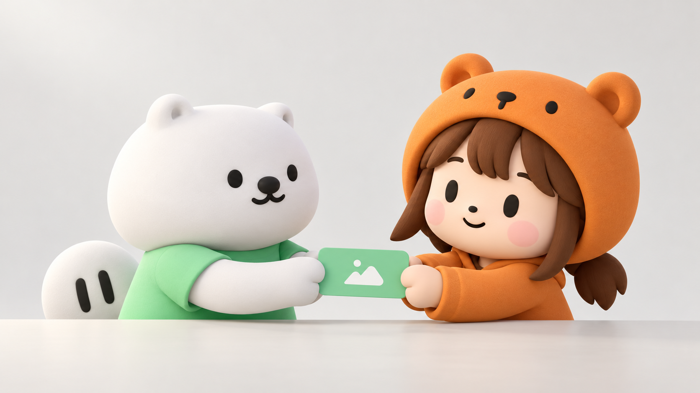
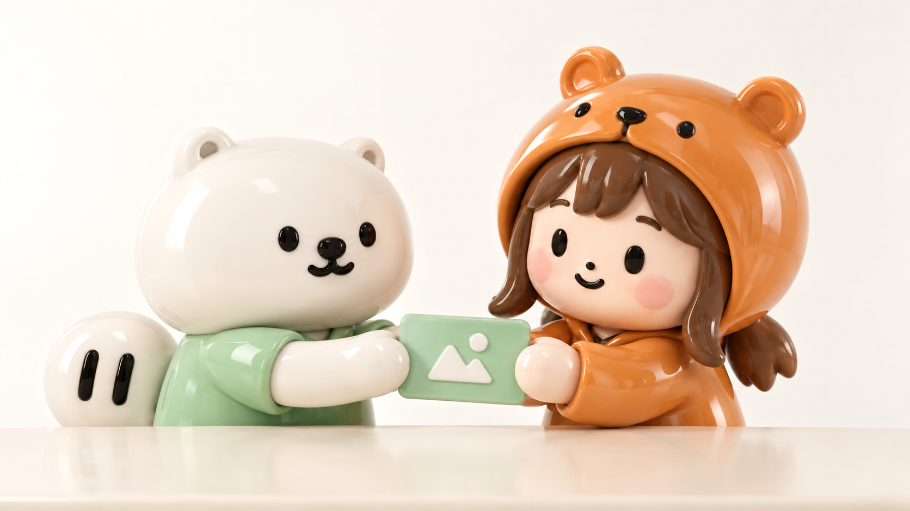
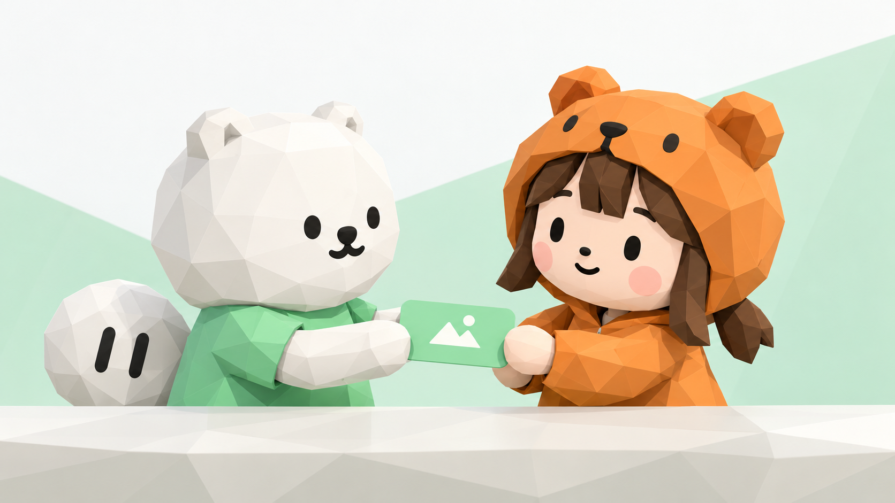
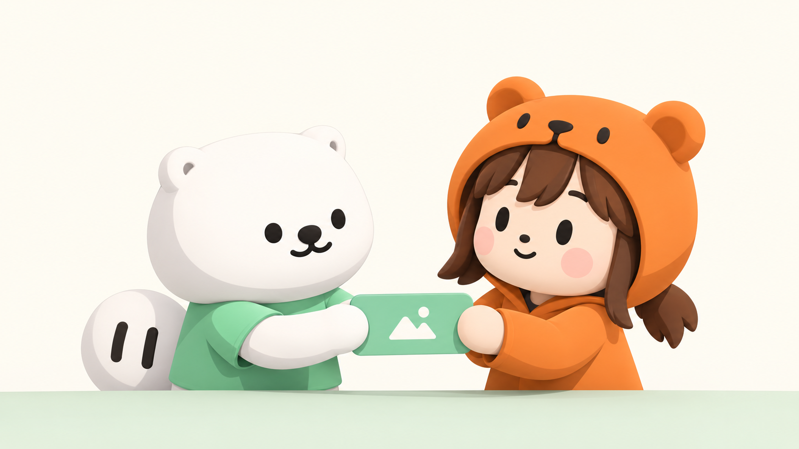
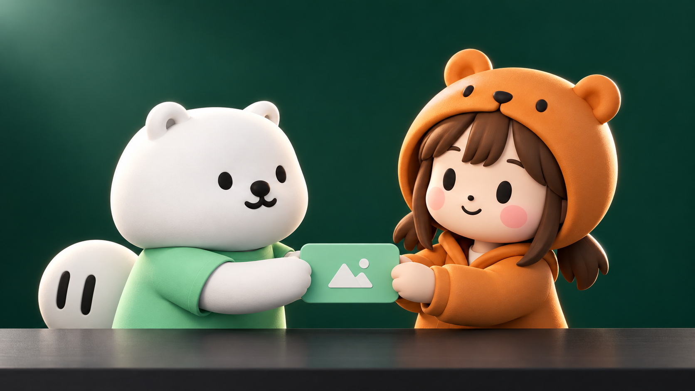
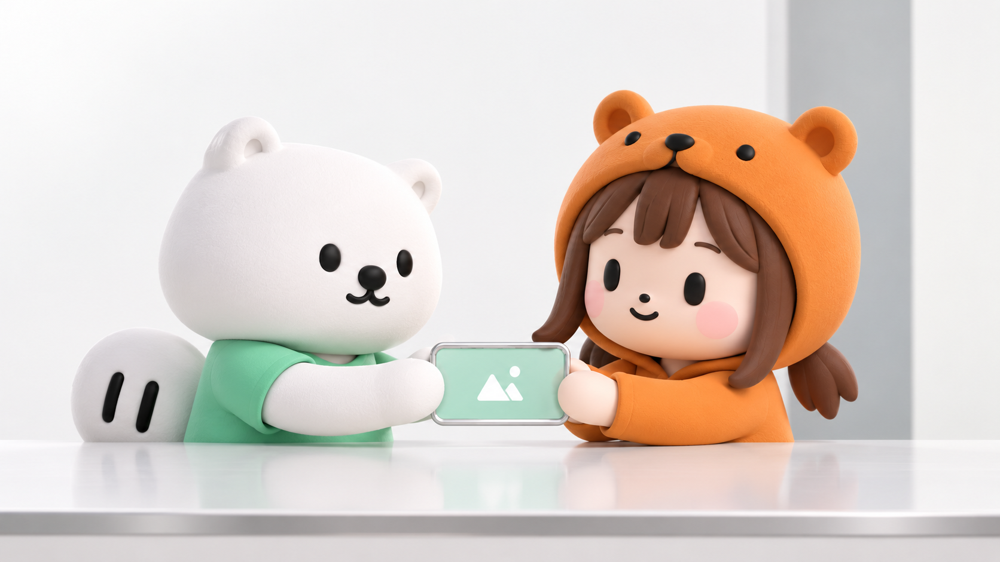
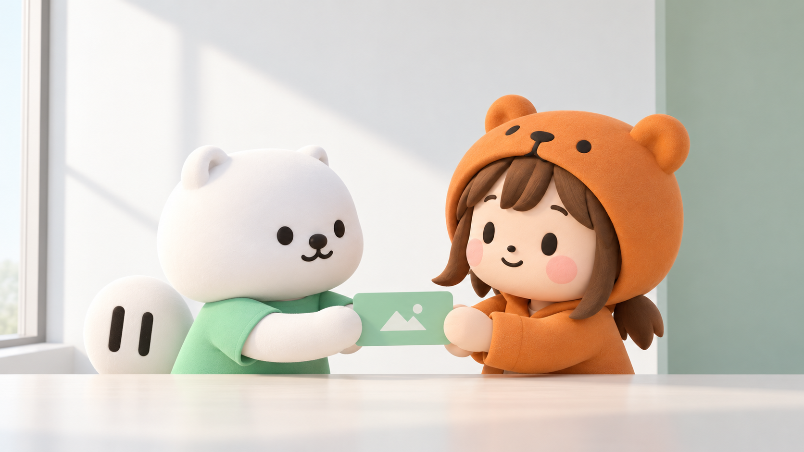

01极简哑光
柔和、简洁，角色和表情优先。
适合主片基础风格。
同一对角色，同一个交换卡片的动作。比较材质、光影与空间带来的变化，挑出适合这支片子的视觉方向。

柔和、简洁，角色和表情优先。
适合主片基础风格。

亮釉陶瓷感，轮廓圆润，反射明显。
适合品牌定格、开场或收尾。

半透明玻璃，边缘透光，材质差异强。
适合科技意象或短暂的演示段落。

清楚的几何切面，轻快、有游戏感。
适合模块搭建、流程和关卡式表达。

清楚的明暗色块，少纹理，接近动画渲染。
适合角色表演和轻喜剧。

深绿背景与明亮轮廓，主体更突出。
适合商务段落、品牌重点和收尾。

白色空间、金属边框、玻璃卡片。
适合业务介绍和产品展示。

简洁建筑与自然窗光，更有生活空间感。
适合延展社区、工作台和商务场景。
01 · 极简哑光
02 · 温润瓷感
03 · 磨砂玻璃
04 · 低多边形
05 · 清爽赛璐璐
06 · 高对比雕塑
07 · 简洁科技
08 · 自然光建筑